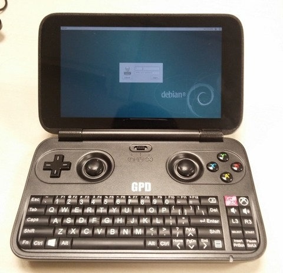

安裝步驟：
1. UEFI USB Boot Disk
$ cd $ sudo apt-get install gdisk $ sudo sgdisk --zap-all /dev/sdb $ sudo sgdisk --new=1:0:0 --typecode=1:ef00 /dev/sdb $ sudo mkfs.vfat -F32 -n GRUB2EFI /dev/sdb1 $ sudo mount -t vfat /dev/sdb1 /mnt -o uid=1000,gid=1000,umask=022 $ unzip usb-pack_efi.zip $ rsync -auv usb-pack_efi/ /mnt $ sudo grub-install --removable --boot-directory=/mnt/boot --efi-directory=/mnt/EFI/BOOT /dev/sdb
2. 將Debian 8.0 ISO放到/mnt/iso/
3. 開機時，按下Fn + F7進入開機選單
4. Rotate Screen
$ sudo vim /etc/X11/xorg.conf.d/20-gpudriver.conf
Section "Device"
Identifier "gma500_gfx"
Driver "fbdev"
Option "Rotate" "CW"
EndSection
$ sudo vim /etc/X11/xorg.conf.d/40-monitor.conf
Section "Monitor"
Identifier "LVDS-0"
Option "Rotate" "right"
EndSection
$ sudo nano /etc/default/grub
GRUB_CMDLINE_LINUX="fbcon=rotate:1"
$ sudo grub-mkconfig -o /boot/grub/grub.cfg
5. Wifi(brcmfmac4356-pcie.bin, brcmfmac4356-pcie.txt)(先透過其它USB網卡上網)
$ sudo apt-get update $ sudo apt-get install wpasupplicant network-manager-gnome $ sudo cp brcmfmac* /lib/firmware/brcm/
6. Audio
$ sudo apt-get install firmware-intel-sound
完成
